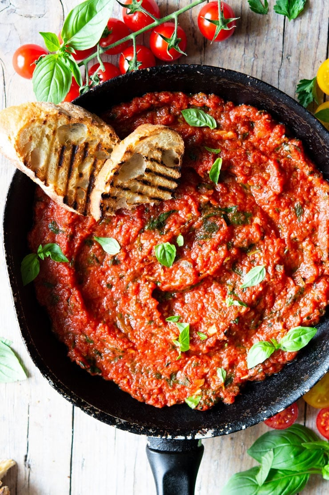

Italian Tomato Sauce
Home

Here is an image of the tomato sauce with bread after following the recipe!
Description
An easy Italian tomato sauce made from scratch with just 4 ingredients in only 10 minutes! This tomato sauce is perfect for pasta, pizza or simply for dunking some char-grilled ciabatta into. It’s rich in flavour and couldn’t be easier!
Ingredient list
- 1 clove garlic
- 15 oz good quality canned chopped tomatoes, (400g)
- 1 handful fresh basil
- 1-2 tablespoons olive oil
- salt
Instructions
- Finely chop or crush the garlic and add it to a skillet or frying pan with 1-2 tablespoons of olive oil. Saute the garlic for 1 minute or until fragrant (don’t let it brown).
- Add the tomatoes then rinse out the can with 1-2 tablespoons of water and add that to the sauce. If your tomatoes are quite chunky or you prefer a smoother consistency you can use a potato masher to crush them at this point (optional).
- Add a pinch of salt and simmer on a medium heat for 8-10 minutes until reduced slightly. Turn off the heat and add a handful of freshly chopped basil (optional).
- If serving with pasta, use a small amount of pasta water to emulsify the sauce, add the pasta and toss until thoroughly coated (sauce makes enough for 400g or 14oz of pasta to serve 4).
Here is the original link!